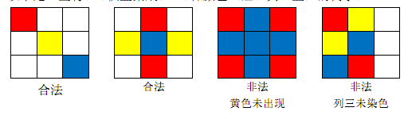

BZPRO
#4487. [Jsoi2015]染色问题
内存限制：512 MiB
时间限制：10 Sec
提交
提交记录
讨论
题目描述
棋盘是一个n×m的矩形，分成n行m列共n*m个小方格。
现在萌萌和南南有C种不同颜色的颜料，他们希望把棋盘用这些颜料染色，并满足以下规定：
1.棋盘的每一个小方格既可以染色（染成C种颜色中的一种），也可以不染色。
2.棋盘的每一行至少有一个小方格被染色。
3.棋盘的每一列至少有一个小方格被染色。
4.种颜色都在棋盘上出现至少一次。
以下是一些将3×3棋盘染成C=3种颜色（红、黄、蓝）的例子：

请你求出满足要求的不同的染色方案总数。只要存在一个位置的颜色不同，
即认为两个染色方案是不同的
输入格式
输入只有一行 3 个整数n,m,c。1 < = n,m,c < = 400
输出格式
输出一个整数，为不同染色方案总数。
因为总数可能很大，只需输出总数mod 1,000,000,007的值。
样例
样例输入
2 2 3
样例输出
60
数据范围与提示